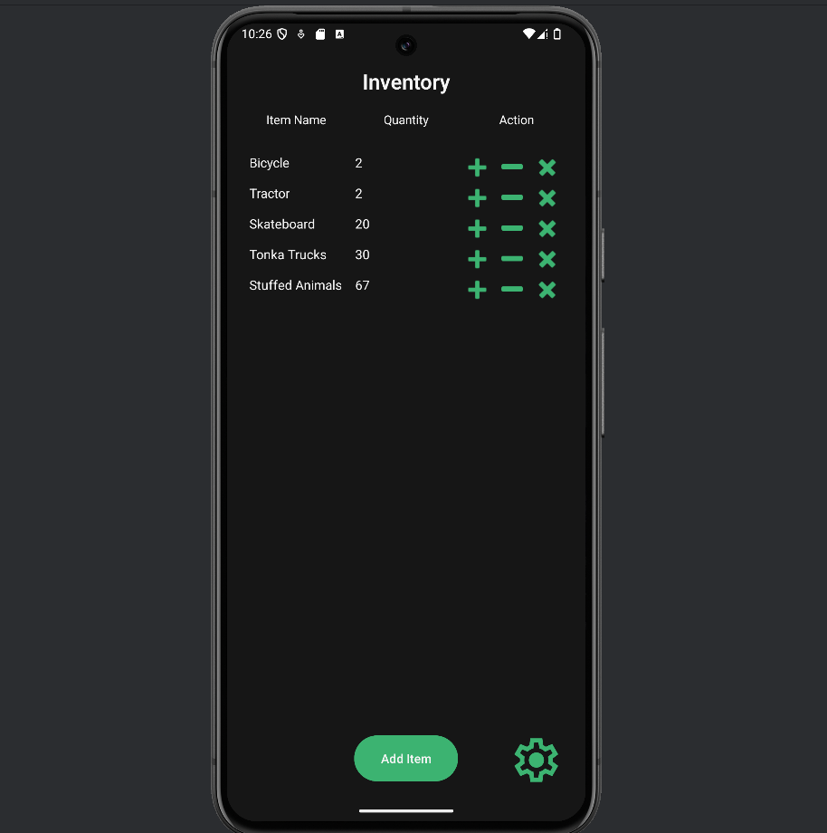
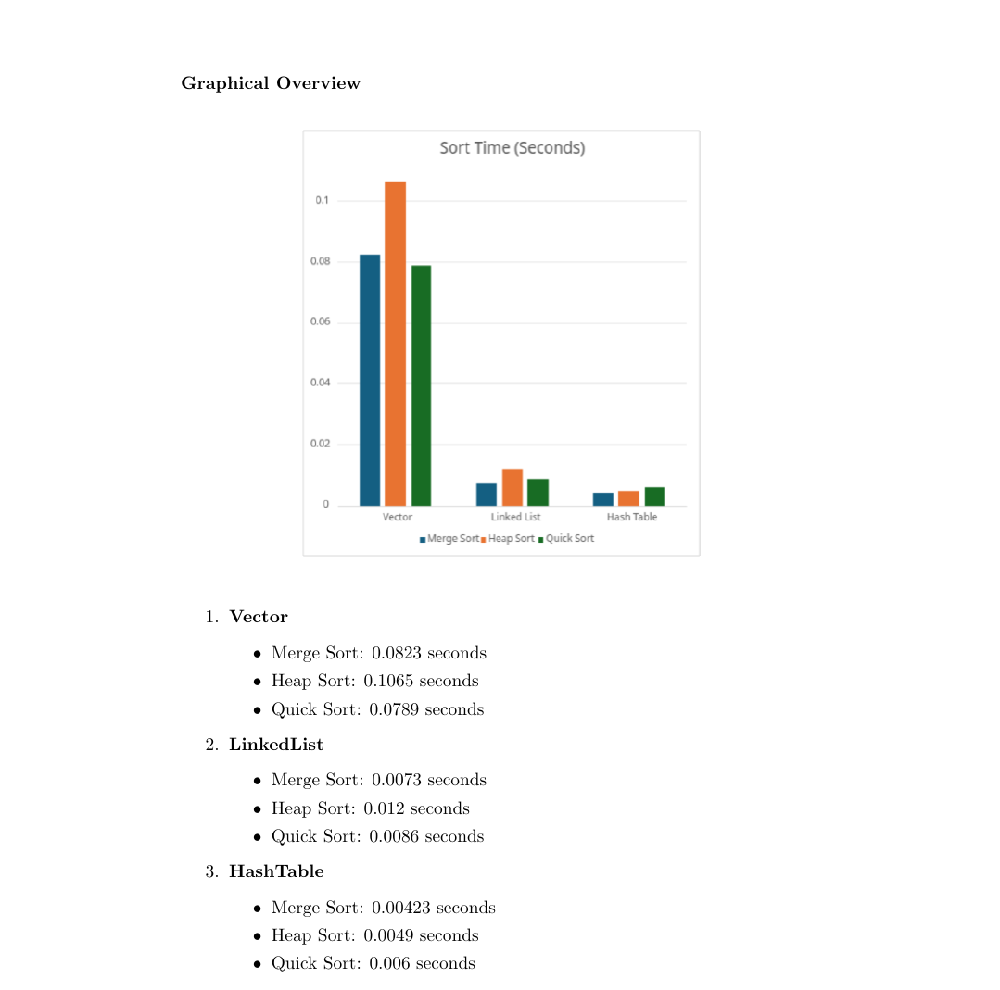
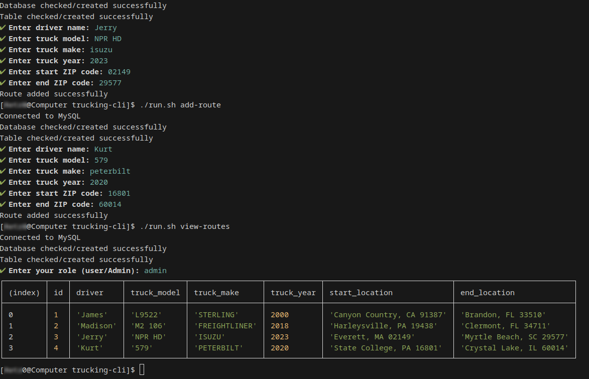

My Work
Capstone Self-Assessment
The next three projects are enhancements from the capstone class at SNHU. I chose three different classes in the program to enhance.
In the first enhancement, I added a user profiles to the application. This allowed the app to track the user settings for the active user.
This showcases my ability to create a screen for an android app, manage a SQLite database, and track user settings across multiple sessions.
This enhancement shows my ability to scale applications into a multi-user environment.
The second enhancement is a lab performed on Data structures and algorithms. It was meant to showcase how different data structure handle sorting algorithms. I chose this enhancement because I wanted a hands-on comparison of the vector, linked list, and hash table for how they handle sorting. This enhancement showcases My abiltiy to construct these data structures and each, merge, heap, and quick sorting algorithms for each data structure.
The final enhancement was very exciting since it was a language I had very little experience in, JavaScript (Node.js). Working on this assignment was a good intro to the vast uses of the NPM libraries. In this enhancement I created a MySQL database for storing trucking information, this application showcases my ability to enforce input validation against SQL Injection, Accessing API information (api.zippopotam.us) for gaining City and State info from a zip code, and using libraries for creating an efficient CLI application.
Through my process in working through the enhancements. I have gained valuable insight into collaborating with a team in receiving feedback on my work. This helps me to critically consider constructive feedback and acting as necessary. Through my capstone journals and this portfolio, I have learned how best to communicate with stakeholders. Ensuring that the people depending on my work have the ability to understand the program without the user of jargon.
The second enhancement is a lab performed on Data structures and algorithms. It was meant to showcase how different data structure handle sorting algorithms. I chose this enhancement because I wanted a hands-on comparison of the vector, linked list, and hash table for how they handle sorting. This enhancement showcases My abiltiy to construct these data structures and each, merge, heap, and quick sorting algorithms for each data structure.
The final enhancement was very exciting since it was a language I had very little experience in, JavaScript (Node.js). Working on this assignment was a good intro to the vast uses of the NPM libraries. In this enhancement I created a MySQL database for storing trucking information, this application showcases my ability to enforce input validation against SQL Injection, Accessing API information (api.zippopotam.us) for gaining City and State info from a zip code, and using libraries for creating an efficient CLI application.
Through my process in working through the enhancements. I have gained valuable insight into collaborating with a team in receiving feedback on my work. This helps me to critically consider constructive feedback and acting as necessary. Through my capstone journals and this portfolio, I have learned how best to communicate with stakeholders. Ensuring that the people depending on my work have the ability to understand the program without the user of jargon.
Code Review of School projects
Inventory Managagement App
Freely accessible for small buisness owners and consumers
- Java
- XML
- SQLite
- UI/UX
- Android


Data Structures & Algorithms Lab
Lab testing the time complexity of DataStructures and Algorithms
- C++
- Cmake

Trucking Document Server
DataBase interface for tracking trucking data
- JavaScrip
- Node
- MySQL

Clients
About Me
I was born in Washington and grew up in the greater Seattle area. I attended high school at the Lake Washington Institute of Technology, where I graduated early while also obtaining my associate's in computer science. I aspire to further my knowledge in the computer science world. My goal is to become a full-stack developer.
My Resume